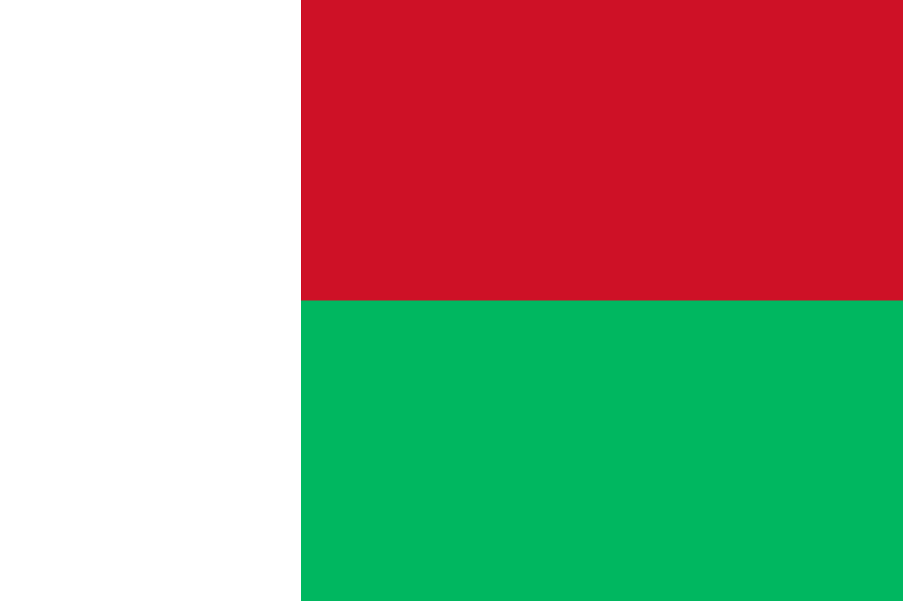

<!--
  Generated template for the AfricaPage page.

  See http://ionicframework.com/docs/components/#navigation for more info on
  Ionic pages and navigation.
-->
<ion-header>

  <ion-navbar>
    <ion-title>Africa</ion-title>
  </ion-navbar>

</ion-header>


<ion-content padding>
  <ion-list>
    <ion-item (click)="mostrarAfricaDoSul()">
      <span></span>
      
      <span>Africa do Sul</span>
    </ion-item>
    <ion-item (click)="mostrarEgito()">
      
      <span>Egito</span>
    </ion-item>
    <ion-item (click)="mostrarMadagascar()">
      
      <span>Madagascar</span>
    </ion-item>
    <ion-item (click)="mostrarCongo()">
      
      <span>Congo</span>
    </ion-item>
    <ion-item (click)="mostrarNigeria()">
      
      <span>Nigeria</span>
    </ion-item>
  </ion-list>
</ion-content>